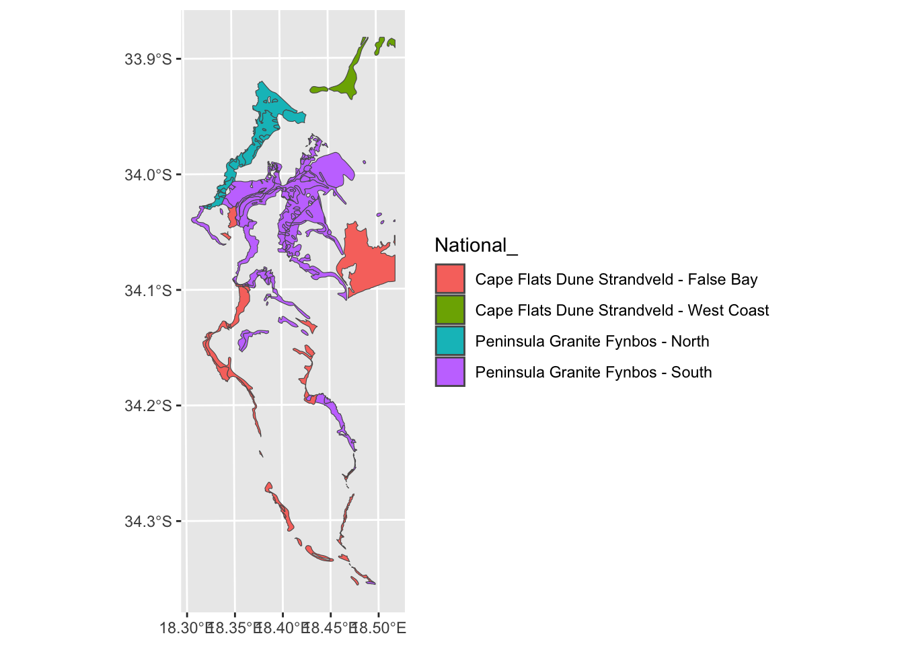
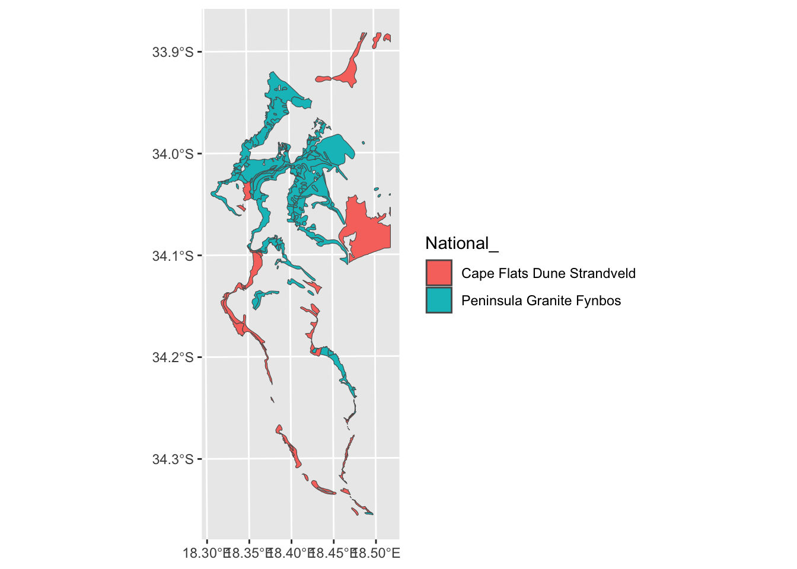
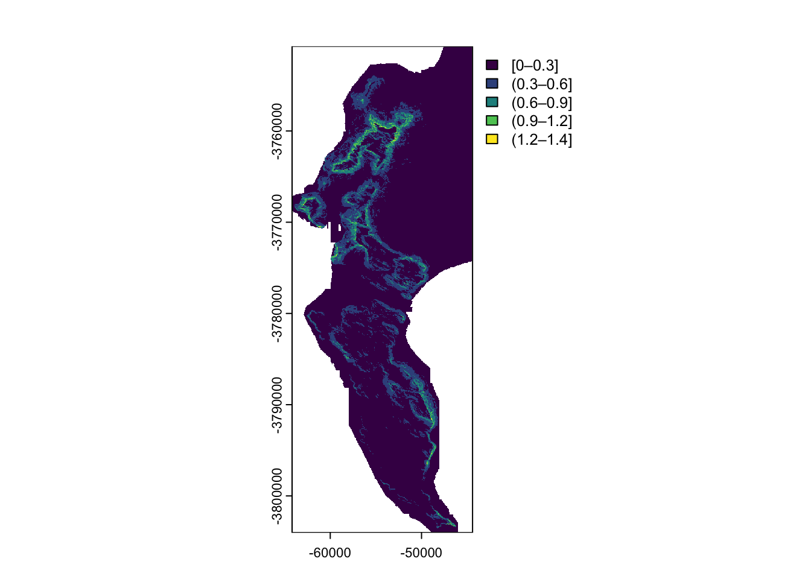

7 Vector GIS operations in R
7.1 Case study and demo datasets
Ok, for demonstrating some of the many GIS operations R can perform we will be using data from one of my favourite study areas, the Cape Peninsula.
The datasets we will use, some of their properties and where to source them are tabled below. You can also download them as one (40MB) .zip file here, because the City of Cape Town updates the files from time to time and small changes in format, naming etc break the code to come. Please do not use the version from the .zip file in any real analyses etc, because I can make no guarantees about their accuracy etc. It is best to use the latest version from the links in the table.
| Name | Data source | Data model | Geometry type | File format |
|---|---|---|---|---|
| Localities | iNaturalist | Vector | Point | Data frame from API |
| Watercourses | City of Cape Town | Vector | Line | ESRI shapefile |
| Vegetation Types (historical) | City of Cape Town | Vector | Polygon | ESRI shapefile |
| Vegetation Types (remnants) | City of Cape Town | Vector | Polygon | ESRI shapefile |
| Elevation | City of Cape Town | Raster | Raster | GeoTIFF |
If you’d like to follow along and run the analyses that follow, please download the datasets. There’s no need to download the iNaturalist data as we’ll download it directly from R.
For installing R and the required packages see section 1.2.
7.2 Reading and writing
sf has a one-size-fits-all approach in that most functions can be applied to most different data types (point, line, polygon, etc) or, in the case of reading and writing, file formats. To read data the function you want is st_read().
You’ll note that most of the sf functions begin with “st_” - this stands for “spatial and temporal” and is the same in some other GIS like PostGIS.
Let’s try to read in some data with st_read():
NOTE: if you’re trying any of the read/write code at home, you’ll need to set the file path to where you put the data and want the outputs on your local machine. You can also use
?setwdto simplify this. If you are on Windows, make sure to change the backslashes “" to either double backslashes or forward slashes”/“.
library(sf)
veg <- st_read("data/cape_peninsula/veg/Vegetation_Indigenous.shp")## Reading layer `Vegetation_Indigenous' from data source
## `/Users/jasper/GIT/spatial-r/data/cape_peninsula/veg/Vegetation_Indigenous.shp' using driver `ESRI Shapefile'
## Simple feature collection with 1325 features and 5 fields
## Geometry type: POLYGON
## Dimension: XY
## Bounding box: xmin: -63972.95 ymin: -3803535 xmax: 430.8125 ymax: -3705149
## Projected CRS: WGS_1984_Transverse_MercatorThis has successfully read in the data and given us a summary of some of its properties. Note the “Projected CRS” WGS_1984_Transverse_Mercator, so it is Transverse Mercator (TM), using the WGS84 datum, but it hasn’t told us what line of longitude it’s centred on, which is an essential feature of any TM projection.
The first thing you should do when interrogating any spatial data is to check the coordinate reference system (CRS). In sf, you do this with the function st_crs, like so:
st_crs(veg)## Coordinate Reference System:
## User input: WGS_1984_Transverse_Mercator
## wkt:
## PROJCRS["WGS_1984_Transverse_Mercator",
## BASEGEOGCRS["WGS 84",
## DATUM["Hartebeesthoek94",
## ELLIPSOID["WGS 84",6378137,298.257223563,
## LENGTHUNIT["metre",1]],
## ID["EPSG",6148]],
## PRIMEM["Greenwich",0,
## ANGLEUNIT["Degree",0.0174532925199433]]],
## CONVERSION["unnamed",
## METHOD["Transverse Mercator",
## ID["EPSG",9807]],
## PARAMETER["Latitude of natural origin",0,
## ANGLEUNIT["Degree",0.0174532925199433],
## ID["EPSG",8801]],
## PARAMETER["Longitude of natural origin",19,
## ANGLEUNIT["Degree",0.0174532925199433],
## ID["EPSG",8802]],
## PARAMETER["Scale factor at natural origin",1,
## SCALEUNIT["unity",1],
## ID["EPSG",8805]],
## PARAMETER["False easting",0,
## LENGTHUNIT["metre",1],
## ID["EPSG",8806]],
## PARAMETER["False northing",0,
## LENGTHUNIT["metre",1],
## ID["EPSG",8807]]],
## CS[Cartesian,2],
## AXIS["(E)",east,
## ORDER[1],
## LENGTHUNIT["metre",1,
## ID["EPSG",9001]]],
## AXIS["(N)",north,
## ORDER[2],
## LENGTHUNIT["metre",1,
## ID["EPSG",9001]]]]This shows us the CRS as a WKT string and looks very complicated… Essentially there are three components to it:
BASEGEOGCRS- the geographic (or unprojected) CRSCONVERSION- the projection, which includes a lot of information, but essentially tells us it’s Transverse Mercator, and the"Longitude of natural origin",19indicates that it is centred on the 19 degree line of longitude (i.e. we’re dealing with Transverse Mercator Lo19)CS- the cartesian axes, showing that we’re dealing with axes oriented to North and East and units of metres
TM Lo19 is a good projection for most calculations at this scale (and on this line of longitude). If you’re using Transverse Mercator, always make sure it is set for your closest “odd” line of longitude (i.e. Lo19, Lo21, Lo23)!
More on working with coordinate reference systems in see section 7.11.
Let’s have a closer look at the data:
class(veg)## [1] "sf" "data.frame"It is an object of two different “classes”, a data.frame, which is an R object class you should be familiar with, and class sf, which is the native class for the sf library.
The nice thing about being both classes is it means you can apply the functions built for either class, such as head, a commonly used function for looking at the first few rows of a dataframe.
head(veg)## Simple feature collection with 6 features and 5 fields
## Geometry type: POLYGON
## Dimension: XY
## Bounding box: xmin: -51324.95 ymin: -3732075 xmax: -35653.98 ymax: -3718136
## Projected CRS: WGS_1984_Transverse_Mercator
## AREA_HCTR PRMT_MTR National_ Subtype Community
## 1 1807.5183616 24763.8073 Atlantis Sand Fynbos on marine-derived acid sands Need to Find Out
## 2 2.1437754 609.5892 Atlantis Sand Fynbos on marine-derived acid sands Need to Find Out
## 3 0.2134855 185.5566 Atlantis Sand Fynbos on marine-derived acid sands Need to Find Out
## 4 2.8602421 652.1671 Atlantis Sand Fynbos on marine-derived acid sands Need to Find Out
## 5 0.5468058 336.8006 Atlantis Sand Fynbos on marine-derived acid sands Need to Find Out
## 6 0.4172046 259.7772 Atlantis Sand Fynbos on marine-derived acid sands Need to Find Out
## geometry
## 1 POLYGON ((-48203.88 -372294...
## 2 POLYGON ((-36676.72 -371974...
## 3 POLYGON ((-35891.46 -371837...
## 4 POLYGON ((-35750.07 -371847...
## 5 POLYGON ((-35823.89 -371817...
## 6 POLYGON ((-35929.18 -371824...Note there are 5 attribute columns (the attribute table as you would see in most GIS software) and a 6th geometry column. All sf objects have a geometry column. This is where it stores the geometry - i.e. the point, line, polygon etc - associated with each row of attribute data.
To write data with sf you use st_write(), like so:
st_write(veg, "data/cape_peninsula/veg/Vegetation_Indigenous_duplicate.shp", append = FALSE)## Writing layer `Vegetation_Indigenous_duplicate' to data source
## `data/cape_peninsula/veg/Vegetation_Indigenous_duplicate.shp' using driver `ESRI Shapefile'
## Writing 1325 features with 5 fields and geometry type Polygon.Note that I added , append = FALSE because in my case it I want it to overwrite an existing file by the same name, and this command suppresses the warning it would usually give.
file.exists("data/cape_peninsula/veg/Vegetation_Indigenous_duplicate.shp")## [1] TRUEConfirms that the file exists, so it has written a file out successfully.
Note that the function recognised that I wanted to write out an ESRI shapefile from the .shp file extension I provided. You can set the file type using the driver = setting in st_write(). Try st_drivers() for the list of file types supported.
7.3 Basic plotting
As with other data types in R (and perhaps even more so with spatial data), you can really go to town with plotting. I’m only going to show you enough to be able to interrogate your data. Making it look pretty is a week-long course or more in its own right. Check out the “Making maps with R” chapter in Lovelace et al’s online book Geocomputation with R for a good start.
The easiest way to plot datasets in R is often a bad thing to do when working with spatial datasets!
plot(veg)
Fortunately, in this case the dataset isn’t too big, but often you’ll either be overwhelmed with plots or your computer will crash…
Why 5 plots and not one? This is because sf wants to plot the properties of each attribute in the attribute table. Fortunately, there were only 5, but there could have been hundreds! You can select the one you want with indexing like so:
plot(veg[3])
These are the National Vegetation Types for the City of Cape Town municipality.
You’ll note that we’re using the base R graphics functions. I mentioned before that sf integrates well with the Tidyverse, so this could also be plotted like so:
library(tidyverse) #calls ggplot2 and other Tidyverse packages together
ggplot() +
geom_sf(data=veg, aes(fill = `National_`))
That’s better for the legend, but now we’ve squashed the map. Let’s narrow in on the Cape Peninsula for convenience.
7.4 Cropping
Here we’ll apply the function st_crop(). To use the function you need an object to crop, and an extent or bounding box to crop to. sf is clever, and you can set the extent by giving it another object who’s extent you’d like to match (check the bounding box given when we read in the data earlier).
We don’t have a second object in this case, so we have to provide a “numeric vector with named elements xmin, ymin, xmax and ymax”, like so:
#Make a vector with desired coordinates in metres according to TM Lo19
ext <- c(-66642.18, -3809853.29, -44412.18, -3750723.29)
ext## [1] -66642.18 -3809853.29 -44412.18 -3750723.29#Give the vector names
names(ext) <- c("xmin", "ymin", "xmax", "ymax")
ext## xmin ymin xmax ymax
## -66642.18 -3809853.29 -44412.18 -3750723.29Now we can feed that into st_crop
veg <- st_crop(veg, ext) #Note that I'm overwriting the old data object "veg"## Warning: attribute variables are assumed to be spatially constant throughout all geometriesggplot() + geom_sf(data=veg, aes(fill = `National_`))
Better?
But what about the silly splits like Peninsula Granite Fynbos - North/South and Cape Flats Dune Strandveld - West Coast/False Bay.
Which ones do I mean?
7.5 Select and subset by attribute
Let’s select them from the attribute table and plot them.
#Make a vector of the veg types we want
split_veg <- c("Peninsula Granite Fynbos - North",
"Peninsula Granite Fynbos - South",
"Cape Flats Dune Strandveld - West Coast",
"Cape Flats Dune Strandveld - False Bay")
#Use base R indexing to select attributes
vegsub <- veg[which(veg$National_ %in% split_veg),]
#Plot
ggplot() + geom_sf(data=vegsub, aes(fill = `National_`))
Or tidyverse…
#Using tidyverse piping to filter and plot
veg %>%
filter(National_ %in% split_veg) %>%
ggplot() +
geom_sf(aes(fill = `National_`))
#The advantage being that you don't have to make the intermediate "vegsub" objectOk. What if we decided we don’t want them split?
7.6 Combine classes and dissolve by attribute
We can just rename them in appropriate column in the attribute table…
vegsub$National_ <- str_replace_all(vegsub$National_,
c("Peninsula Granite Fynbos - North" = "Peninsula Granite Fynbos",
"Peninsula Granite Fynbos - South" = "Peninsula Granite Fynbos",
"Cape Flats Dune Strandveld - West Coast" = "Cape Flats Dune Strandveld",
"Cape Flats Dune Strandveld - False Bay" = "Cape Flats Dune Strandveld"))
ggplot() + geom_sf(data=vegsub, aes(fill = `National_`))
Nice, but from the polygon boundaries we see that there are a number of adjacent polygons (i.e. they have shared boundaries) that are of the same veg type. We can “dissolve” and plot it without the unwanted boundaries using summarize():
vegsub %>% group_by(National_) %>%
summarize() %>%
ggplot() + geom_sf(aes(fill = National_))
Ok… I think we’ve flogged that horse as far as it’ll go for now. Let’s bring in another dataset. How about points?
7.7 Calling iNaturalist locality (point) data from R
A very cool feature of iNaturalist is that the team at rOpenSci have built a great R package for interfacing with it directly, called rinat!
Let’s get all the records we can for the King Protea (Protea cynaroides).
library(rinat)
#Call the data directly from iNat
pc <- get_inat_obs(taxon_name = "Protea cynaroides",
bounds = c(-35, 18, -33.5, 18.5),
maxresults = 1000)
#View the first few rows of data
head(pc)## scientific_name datetime description
## 1 Protea cynaroides 2023-02-28 00:00:00 +0200
## 2 Protea cynaroides 2022-04-27 09:18:16 +0200
## 3 Protea cynaroides 2023-03-04 09:59:03 +0200
## 4 Protea cynaroides 2023-02-18 13:08:50 +0200
## 5 Protea cynaroides
## 6 Protea cynaroides 2023-03-03 16:05:40 +0200
## place_guess latitude longitude tag_list common_name
## 1 Wynberg NU (2), Cape Town, 7824, South Africa -33.99381 18.41977 King Protea
## 2 Table Mountain National Park, Cape Town, WC, ZA -33.96995 18.40080 King Protea
## 3 Table Mountain National Park, Cape Town, WC, ZA -33.98456 18.41809 King Protea
## 4 Table Mountain National Park, Cape Town, WC, ZA -33.97511 18.42066 King Protea
## 5 Cape Point -34.35477 18.47857 King Protea
## 6 Table Mountain National Park, ZA-WC-CT, ZA-WC, ZA -33.96752 18.40833 King Protea
## url
## 1 https://www.inaturalist.org/observations/150493345
## 2 https://www.inaturalist.org/observations/150288119
## 3 https://www.inaturalist.org/observations/150284352
## 4 https://www.inaturalist.org/observations/150208745
## 5 https://www.inaturalist.org/observations/150187921
## 6 https://www.inaturalist.org/observations/150150887
## image_url user_login id
## 1 https://inaturalist-open-data.s3.amazonaws.com/photos/259510627/medium.jpg ydnewp2 150493345
## 2 https://inaturalist-open-data.s3.amazonaws.com/photos/259113769/medium.jpg edrich 150288119
## 3 https://inaturalist-open-data.s3.amazonaws.com/photos/259106410/medium.jpg karl13n 150284352
## 4 https://inaturalist-open-data.s3.amazonaws.com/photos/258959881/medium.jpg ajvandijk 150208745
## 5 https://static.inaturalist.org/photos/258922896/medium.jpeg rebecca1308 150187921
## 6 https://inaturalist-open-data.s3.amazonaws.com/photos/258850178/medium.jpeg dryfveer 150150887
## species_guess iconic_taxon_name taxon_id num_identification_agreements
## 1 King Protea Plantae 132848 2
## 2 King Protea Plantae 132848 3
## 3 King Protea Plantae 132848 2
## 4 King Protea Plantae 132848 3
## 5 King Protea Plantae 132848 2
## 6 King Protea Plantae 132848 1
## num_identification_disagreements observed_on_string observed_on time_observed_at
## 1 0 2023/02/28 10h30AM 2023-02-28
## 2 0 2022-04-27 09:18:16+02:00 2022-04-27 2022-04-27 07:18:16 UTC
## 3 0 2023-03-04 09:59:03+02:00 2023-03-04 2023-03-04 07:59:03 UTC
## 4 0 2023-02-18 13:08:50+02:00 2023-02-18 2023-02-18 11:08:50 UTC
## 5 0
## 6 0 2023-03-03 16:05:40 2023-03-03 2023-03-03 14:05:40 UTC
## time_zone positional_accuracy public_positional_accuracy geoprivacy taxon_geoprivacy
## 1 Pretoria 678 678 <NA> open
## 2 Pretoria 4 4 <NA> open
## 3 Pretoria 31 31 <NA> open
## 4 Pretoria 3 3 <NA> open
## 5 Pretoria 203 203 <NA> open
## 6 Pretoria 12 12 <NA> open
## coordinates_obscured positioning_method positioning_device user_id user_name
## 1 false 772460 Wendy
## 2 false 6548136
## 3 false 6506594
## 4 false 1480751
## 5 false gps gps 5136962 Rebecca Lain
## 6 false 2173153 Santie Gouws
## created_at updated_at quality_grade license sound_url
## 1 2023-03-07 15:03:44 UTC 2023-03-08 05:19:13 UTC research CC-BY-NC NA
## 2 2023-03-05 07:51:44 UTC 2023-03-07 07:00:03 UTC research CC-BY-NC NA
## 3 2023-03-05 06:23:29 UTC 2023-03-07 07:01:38 UTC research CC-BY-NC NA
## 4 2023-03-04 13:57:43 UTC 2023-03-07 07:10:30 UTC research CC-BY-NC NA
## 5 2023-03-04 06:07:27 UTC 2023-03-04 08:09:54 UTC casual NA
## 6 2023-03-03 20:11:37 UTC 2023-03-03 20:31:31 UTC research CC-BY-NC NA
## oauth_application_id captive_cultivated
## 1 NA false
## 2 3 false
## 3 3 false
## 4 3 false
## 5 2 false
## 6 2 false#Filter returned observations by a range of column attribute criteria
pc <- pc %>% filter(positional_accuracy<46 &
latitude<0 &
!is.na(latitude) &
captive_cultivated == "false" &
quality_grade == "research")
class(pc)## [1] "data.frame"Ok, so this is a dataframe with lat/long data, but it isn’t registered as an object with spatial attributes (i.e. geometries).
7.8 Converting a dataframe into a spatial object
To make it an object of class(sf) we use the function st_as_sf().
#Make the dataframe a spatial object of class = "sf"
pc <- st_as_sf(pc, coords = c("longitude", "latitude"), crs = 4326)Note that I had to define the CRS!!! I defined it to be Geographic WGS84, using the EPSG code in this case.
#What class is it?
class(pc)## [1] "sf" "data.frame"#Note the new "geometry" column
names(pc)## [1] "scientific_name" "datetime"
## [3] "description" "place_guess"
## [5] "tag_list" "common_name"
## [7] "url" "image_url"
## [9] "user_login" "id"
## [11] "species_guess" "iconic_taxon_name"
## [13] "taxon_id" "num_identification_agreements"
## [15] "num_identification_disagreements" "observed_on_string"
## [17] "observed_on" "time_observed_at"
## [19] "time_zone" "positional_accuracy"
## [21] "public_positional_accuracy" "geoprivacy"
## [23] "taxon_geoprivacy" "coordinates_obscured"
## [25] "positioning_method" "positioning_device"
## [27] "user_id" "user_name"
## [29] "created_at" "updated_at"
## [31] "quality_grade" "license"
## [33] "sound_url" "oauth_application_id"
## [35] "captive_cultivated" "geometry"#Plot
ggplot() + geom_sf(data=pc)Great! We got lots of points, but without a base layer its very difficult to tell where exactly these are?
7.9 Adding basemaps to plots
There are lots of ways to make the basemap from data objects etc that we can plot our points over, but an easy way is to pull in tiles from Open Street Maps and plot our points on those.
library(rosm)
library(ggspatial)
ggplot() +
annotation_map_tile(type = "osm", progress = "none") +
geom_sf(data=pc)
Note that there are quite a few base layer/tile options that can be set with type = "". Try rosm::osm.types() to see them all.
This is better than nothing, but the scale of the map is too small to really see where the plants actually are. It would be much easier if we could look at the data interactively?
7.10 Interactive maps with leaflet
We can generate interactive maps by calling the leaflet mapserver using wrapper functions in the leaflet R package written for this purpose.
NOTE: If you can’t get leaflet to work it is probably a CRS problem. Your data need to be in Geographic or Web Mercator
library(leaflet)
library(htmltools)
leaflet() %>%
# Add default OpenStreetMap map tiles
addTiles(group = "Default") %>%
# Add our points
addCircleMarkers(data = pc,
group = "Protea cynaroides",
radius = 3,
color = "green") Much better!
Strange, but even though we filtered our iNaturalist records for captive_cultivated == "false" we still have a number of observations that appear to be in people’s gardens.
Let this serve as a warning to be wary of all data! Always do “common-sense-checks” on your data and the outputs of your analyses!!!
7.11 Reprojecting
One way to drastically reduce the number of cultivated records is to overlay the localities (points) with the remaining extent of the vegetation types (i.e. anything that is not in natural vegtation is likely to be cultivated). Let’s try that…
#Get the remnants layer
vegr <- st_read("data/cape_peninsula/veg/Vegetation_Indigenous_Remnants.shp")## Reading layer `Vegetation_Indigenous_Remnants' from data source
## `/Users/jasper/GIT/spatial-r/data/cape_peninsula/veg/Vegetation_Indigenous_Remnants.shp'
## using driver `ESRI Shapefile'
## Simple feature collection with 3428 features and 7 fields
## Geometry type: POLYGON
## Dimension: XY
## Bounding box: xmin: -63951.23 ymin: -3803532 xmax: 420.7595 ymax: -3705506
## Projected CRS: WGS_1984_Transverse_Mercatorhmm <- st_intersection(pc, vegr)## Error in geos_op2_geom("intersection", x, y, ...): st_crs(x) == st_crs(y) is not TRUEOops! The Coordinate Reference Systems are different! We will need to reproject one of the two datasets…
Let’s see what CRS are currently set:
st_crs(pc)## Coordinate Reference System:
## User input: EPSG:4326
## wkt:
## GEOGCRS["WGS 84",
## ENSEMBLE["World Geodetic System 1984 ensemble",
## MEMBER["World Geodetic System 1984 (Transit)"],
## MEMBER["World Geodetic System 1984 (G730)"],
## MEMBER["World Geodetic System 1984 (G873)"],
## MEMBER["World Geodetic System 1984 (G1150)"],
## MEMBER["World Geodetic System 1984 (G1674)"],
## MEMBER["World Geodetic System 1984 (G1762)"],
## MEMBER["World Geodetic System 1984 (G2139)"],
## ELLIPSOID["WGS 84",6378137,298.257223563,
## LENGTHUNIT["metre",1]],
## ENSEMBLEACCURACY[2.0]],
## PRIMEM["Greenwich",0,
## ANGLEUNIT["degree",0.0174532925199433]],
## CS[ellipsoidal,2],
## AXIS["geodetic latitude (Lat)",north,
## ORDER[1],
## ANGLEUNIT["degree",0.0174532925199433]],
## AXIS["geodetic longitude (Lon)",east,
## ORDER[2],
## ANGLEUNIT["degree",0.0174532925199433]],
## USAGE[
## SCOPE["Horizontal component of 3D system."],
## AREA["World."],
## BBOX[-90,-180,90,180]],
## ID["EPSG",4326]]So the points are Geographic, with no projected CRS CONVERSION.
st_crs(vegr)## Coordinate Reference System:
## User input: WGS_1984_Transverse_Mercator
## wkt:
## PROJCRS["WGS_1984_Transverse_Mercator",
## BASEGEOGCRS["WGS 84",
## DATUM["Hartebeesthoek94",
## ELLIPSOID["WGS 84",6378137,298.257223563,
## LENGTHUNIT["metre",1]],
## ID["EPSG",6148]],
## PRIMEM["Greenwich",0,
## ANGLEUNIT["Degree",0.0174532925199433]]],
## CONVERSION["unnamed",
## METHOD["Transverse Mercator",
## ID["EPSG",9807]],
## PARAMETER["Latitude of natural origin",0,
## ANGLEUNIT["Degree",0.0174532925199433],
## ID["EPSG",8801]],
## PARAMETER["Longitude of natural origin",19,
## ANGLEUNIT["Degree",0.0174532925199433],
## ID["EPSG",8802]],
## PARAMETER["Scale factor at natural origin",1,
## SCALEUNIT["unity",1],
## ID["EPSG",8805]],
## PARAMETER["False easting",0,
## LENGTHUNIT["metre",1],
## ID["EPSG",8806]],
## PARAMETER["False northing",0,
## LENGTHUNIT["metre",1],
## ID["EPSG",8807]]],
## CS[Cartesian,2],
## AXIS["(E)",east,
## ORDER[1],
## LENGTHUNIT["metre",1,
## ID["EPSG",9001]]],
## AXIS["(N)",north,
## ORDER[2],
## LENGTHUNIT["metre",1,
## ID["EPSG",9001]]]]The remnants of vegetation types are in Transverse Mercator Lo19, just like the dataset of the historical extent of the veg types we were working with earlier.
In this case, either CRS is fine for our purposes, but let’s stick with Transverse Mercator Lo19, because it’ll be useful later. For this we need to project the points like so:
pc <- st_transform(pc, st_crs(vegr)) Note that I fed it the CRS from vegr. This guarantees that they’ll be the same, even if we misidentified what the actual CRS is…
7.12 Intersecting points and polygons
…and now we can try to intersect the points and polygons again…
First lets see how many rows and columns the point data before the intersection:
#call the dimensions of pc
dim(pc) ## [1] 650 36And after the intersection?
pc <- st_intersection(pc, vegr)## Warning: attribute variables are assumed to be spatially constant throughout all geometriesdim(pc)## [1] 640 43Less rows, but more columns! Two things have happened:
- The attribute data from the polygons in
vegrintersected by the points inpchave been added to the attribute table inpc! - All points that do not intersect the polygons in
vegrwere dropped (i.e. those that were recorded outside the remaining extent of natural vegetation).
Let’s have a look
ggplot() +
annotation_map_tile(type = "osm", progress = "none") +
geom_sf(data=pc)
Yup, the localities in suburbia are gone… The map is a bit bland though. How about we use our “new information” about which vegetation types the observations occur in to colour or label the points on the map?
7.13 Colour or label points
First, let’s add colour:
library(wesanderson)
pal <- wes_palette("Darjeeling1", 7, type = "continuous")
ggplot() +
annotation_map_tile(type = "osm", progress = "none") +
geom_sf(data=pc, aes(col = National_)) +
scale_colour_manual(values = pal)Looks like almost all of them are in Peninsula Sandstone Fynbos…
pc %>% group_by(National_) %>% summarise(n())## Simple feature collection with 7 features and 2 fields
## Geometry type: GEOMETRY
## Dimension: XY
## Bounding box: xmin: -62094.02 ymin: -3797540 xmax: -48638.23 ymax: -3755805
## Projected CRS: WGS_1984_Transverse_Mercator
## # A tibble: 7 × 3
## National_ `n()` geometry
## <chr> <int> <GEOMETRY [m]>
## 1 Cape Flats Sand Fynbos 2 MULTIPOINT ((-53325.87 -3769939), (-53306.33 -3769936))
## 2 Hangklip Sand Fynbos 3 MULTIPOINT ((-52712.9 -3780179), (-52712.13 -3780180), (-527…
## 3 Peninsula Granite Fynbos - North 1 POINT (-55987.76 -3757205)
## 4 Peninsula Granite Fynbos - South 3 MULTIPOINT ((-56255.7 -3773991), (-53832.83 -3763327), (-532…
## 5 Peninsula Sandstone Fynbos 628 MULTIPOINT ((-62094.02 -3767667), (-62038.23 -3767597), (-62…
## 6 Peninsula Shale Renosterveld 1 POINT (-55866.33 -3755805)
## 7 Southern Afrotemperate Forest 2 MULTIPOINT ((-53662.7 -3762122), (-53645.86 -3762155))Yup! Note the numbers in column n(). But I can’t see where the Hangklip Sand Fynbos record is, so let’s label that one with text using geom_sf_label().
hsf <- pc %>% filter(National_ == "Hangklip Sand Fynbos") #find the locality
ggplot() +
annotation_map_tile(type = "osm", progress = "none") +
geom_sf(data=pc, aes(col = National_)) +
scale_colour_manual(values = pal) +
geom_sf_label(data=hsf, aes(label = "Here"))Aha!
Note that you can specify that the label = setting points to a column in your dataset with names if you have lots of labels to add.
7.14 Buffering
One issue here may be that all localities should be in Peninsula Sandstone Fynbos, but the vegetation type boundaries are wrong. After all, the transition or ecotone between two vegetation types is usually diffuse rather than a clear boundary, not to mention that the data may have been digitized at a very small scale, compromizing precision and accuracy. One way to check this is to buffer the points using st_buffer to see if they are within some distance (say 250m) of the boundary with Peninsula Sandstone Fynbos.
#Find the localities that are not in Peninsula Sandstone Fynbos and add a 250m buffer
npsf <- pc %>%
filter(National_ != "Peninsula Sandstone Fynbos") %>%
st_buffer(dist = 250)
#NOTE that st_buffer() makes them polygons, because they now have area!
npsf$geometry[1] #The first geometry in npsf## Geometry set for 1 feature
## Geometry type: POLYGON
## Dimension: XY
## Bounding box: xmin: -53895.86 ymin: -3762405 xmax: -53395.86 ymax: -3761905
## Projected CRS: WGS_1984_Transverse_Mercator## POLYGON ((-53395.86 -3762155, -53396.21 -376216...#Get the number of unique iNaturalist record numbers
length(unique(npsf$id)) ## [1] 12#Intersect new polygons with veg remnants and filter for those that overlap Peninsula Sandstone Fynbos only
npsf <- st_intersection(npsf, vegr) %>% filter(National_.1 == "Peninsula Sandstone Fynbos")## Warning: attribute variables are assumed to be spatially constant throughout all geometries#Get the number of unique iNaturalist record numbers that overlap PSF
length(unique(npsf$id))## [1] 6So a fair proportion of the records are suspiciously close to Peninsula Sandstone Fynbos…
7.15 Within distance and intersect
Perhaps a more interesting use of buffering is to see if a species’ locality is within a certain distance of a particular habitat etc. For example, we could ask if a species is associated with riparian zones by buffering either the localities (points) or rivers (lines) and then doing an intersection.
But of course there are many ways to skin a cat, and it turns out buffering and intersecting may not be the most efficient here. If we don’t want to pull the attribute data from one dataset to the other we can just use st_intersects() to see if they overlap at all. We can even take it one step further, because sf has the function st_is_within_distance(), which is similar to applying st_buffer() and st_intersects() in one go.
Here we’ll use Brabejum stellatifolium (a riparian tree in the Proteaceae) as our focal species and the watercourse layer from the City of Cape Town.
#Get the watercourse data
water <- st_read("data/cape_peninsula/Open_Watercourses.geojson")## Reading layer `Open_Watercourses' from data source
## `/Users/jasper/GIT/spatial-r/data/cape_peninsula/Open_Watercourses.geojson' using driver `GeoJSON'
## Simple feature collection with 10848 features and 11 fields
## Geometry type: MULTILINESTRING
## Dimension: XY
## Bounding box: xmin: 18.31249 ymin: -34.28774 xmax: 18.99045 ymax: -33.47256
## Geodetic CRS: WGS 84#Check it's CRS
st_crs(water)## Coordinate Reference System:
## User input: WGS 84
## wkt:
## GEOGCRS["WGS 84",
## DATUM["World Geodetic System 1984",
## ELLIPSOID["WGS 84",6378137,298.257223563,
## LENGTHUNIT["metre",1]]],
## PRIMEM["Greenwich",0,
## ANGLEUNIT["degree",0.0174532925199433]],
## CS[ellipsoidal,2],
## AXIS["geodetic latitude (Lat)",north,
## ORDER[1],
## ANGLEUNIT["degree",0.0174532925199433]],
## AXIS["geodetic longitude (Lon)",east,
## ORDER[2],
## ANGLEUNIT["degree",0.0174532925199433]],
## ID["EPSG",4326]]#Call the data directly from iNat
bs <- get_inat_obs(taxon_name = "Brabejum stellatifolium",
bounds = c(-35, 18, -33.5, 18.5),
maxresults = 1000)
#Filter returned observations by a range of attribute criteria
bs <- bs %>% filter(positional_accuracy<46 &
latitude<0 &
!is.na(latitude) &
captive_cultivated == "false" &
quality_grade == "research")
#See how many records we got
nrow(bs)## [1] 237#Make the dataframe a spatial object of class = "sf"
bs <- st_as_sf(bs, coords = c("longitude", "latitude"), crs = 4326) #Note that I had to define the CRS (as Geographic WGS84)!!!Let’s see what we’ve got…
#Crop the water courses to the extent of the locality data
water <- st_crop(water, bs)## Warning: attribute variables are assumed to be spatially constant throughout all geometries#Plot
ggplot() +
annotation_map_tile(type = "osm", progress = "none") +
geom_sf(data = water, colour = "blue") +
geom_sf(data=bs)Hard to tell, but they could all be on rivers?
Let’s try st_intersects() without any buffering first to see if they overlap at all.
st_intersects(bs, water) %>% unlist()## integer(0)Oops! We forgot to project our data!
bs <- st_transform(bs, st_crs(vegr))
water <- st_transform(water, st_crs(vegr))
st_intersects(bs, water) %>% unlist()## integer(0)So none of them intersect, but this is not surprising, because lines and points in GIS do not have area, so they can’t really intersect unless you buffer them… Let’s try st_is_within_distance() and set it for 20 metres.
Note that I add unlist() %>% unique() so that it gives me a vector of the unique features (i.e. once each) that are within 20m, because the function returns a list and will return the same feature (line/river) multiple times - once for every point (tree) it is within 20m of.
st_is_within_distance(bs, water, 20) %>% unlist() %>% unique()## [1] 327 346 347 328 284 285 592 332 617 507 330 264 351 349 885 179 294 333 101 224 280 281 282 615
## [25] 19So it’s given us the list of lines (rivers) within 20m of our points, but that doesn’t tell us how many (or what proportion) of our points are within 20m of a river. Let’s apply the function again, swapping the layers around:
st_is_within_distance(water, bs, 20) %>% unlist() %>% unique()## [1] 224 209 225 235 147 167 176 78 24 184 161 162 3 30 46 50 60 74 98 106 107 132 133 202
## [25] 203 16 19 84 94 97 116 151 153 217 39 77 201 186 10 11 70 71 72 85 92 127 148 149
## [49] 177 93 150 79 145 59 28 40 144 146 157 213So only 60 of the trees are within 20m of the rivers. What about 100m?
st_is_within_distance(water, bs, 100) %>% unlist() %>% unique()## [1] 5 6 31 75 165 224 209 225 235 88 100 121 189 216 147 167 176 82 89 18 23 24 32 37
## [25] 38 56 78 96 130 152 168 170 171 172 180 184 188 197 200 226 179 204 227 169 198 199 29 161
## [49] 162 191 129 110 208 154 2 3 13 16 17 22 30 41 46 47 48 50 51 52 53 54 55 60
## [73] 66 67 74 91 97 98 102 104 105 106 107 111 116 119 132 133 139 140 141 142 143 159 164 174
## [97] 185 192 194 195 196 202 203 217 219 230 19 35 73 83 84 94 109 118 120 134 135 136 137 138
## [121] 151 153 166 49 8 39 40 45 77 201 186 42 43 44 10 11 15 21 25 36 64 70 71 72
## [145] 85 92 93 127 148 149 177 187 231 150 79 87 145 228 59 27 28 26 58 61 62 65 144 146
## [169] 157 213 163171
It’s at this point that it’s worth thinking about the scale, precision and accuracy of both the species localities and the watercourse data before drawing any strong conclusions!!!